我们描述一种现成基础模型的推理时架构增强，显著降低困惑度、提升生成和推理任务准确率。方法在生成期间几乎无额外延迟，但prefill阶段需串行处理。
动机是前馈transformer中状态更新受模型深度限制的根本局限。我们的技术 *recirculation* 引入一种特定形式的循环，让模型作为dynamical system跟踪信念状态。
我们区分该技术与chain-of-thought计算（更适合复杂推理而非基本状态跟踪）、流行的depth-recurrence技术（looping）、以及昂贵的recurrent transformer训练。也提出并评估自适应变体：只需轻调超参、冻结原模型权重。
相对off-the-shelf baseline，自适应recirculation在Gemma3家族取得显著增益：一套数据集上困惑度降23%、GSM8k准确率 +21%、其他下游任务可靠改进。
跟踪流动、演化的事态对理解语言、推理情境、建模世界至关重要。传统状态跟踪方法（RNN、Kalman filter）涉及迭代、顺序更新潜在变量捕捉动态。Transformer训练和prefill的并行操作排除传统方式跟踪状态。
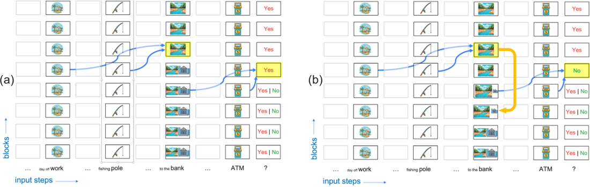
Transformer学到各种巧解使其在有限序列长度对状态跟踪有效。但也会失败于跟踪理解论证结构和社会互动所需的状态信息。基础模型的状态跟踪失败导致多轮对话失连贯、信息收集低效、多agent场景沟通协作崩溃。跟踪缺陷可导致一系列推理失败：无效工作记忆、不稳定theory-of-mind表示、缺稳健内部世界模型。
无正确状态跟踪，模型会在解释间翻转、无法检测不一致。图1展示contextualization error：polysemous词bank的语义。模型维持同时接受bank两义（river bank和financial institution）的信念状态完全合理，但承诺river edge解释后，社交娴熟沟通者应承认意义反转。
通常模型和人维持跟踪信念状态变得不可行，因为分布维度爆炸。人采用启发式：采样、把分布坍缩成原型、或形成与前提最一致的具象心理模型（类似MAP估计）。所有这些仍需状态跟踪，即便无显式不确定性表示。
图2a用bank对话说明transformer的状态跟踪挑战。处理day off work和fishing pole后，用Patchscopes显示bank被处理时浅层反映词歧义（embedding是river edge和financial institution义的混合）；深层（黄标）被前文语境化（蓝箭头），通过把embedding推向river-edge表示选择上下文适当解释。
因架构前馈，浅层无法访问该解释。所以模型被问ATM问题时，初始处理阶段只看到bank的歧义表示。若用歧义表示（蓝箭头）承诺响应，会选错答案。尽管之前解释bank为river edge，它无法访问该状态、基于歧义bank与ATM的强关联回yes。这被刻画为race：模型响应生成可超过模型内部语义收敛。
图2b的干预实验支持该解释：bank token呈现那步把深层（歧义解决后）激活拷回浅层再继续处理，contextualization错误降60%。
假如不是把操作瞄准特定token，而是在每token位置*无差别*执行呢？可能灾难：模型没训练容纳放大的反馈。但假如不是替换而是*泄漏*一点激活从深层到浅层？泄漏可能足够丰富表示而不把表示推出分布。于是我们可能*在不修改完全训练模型权重的情况下*看到推理时收益。
这方案无需微调也可能工作，因为transformer的residual stream像共享黑板、所有层可写，鼓励跨层表示对齐。为什么应对齐？考虑residual stream embedding的一个特定特征、与水分（moisture）等语义概念相关。无论特征早还是晚激活，对输出分布的直接效应因加法交换律相同。pool或tears等输入token可能直接在输入embedding激活moisture特征；bank等歧义token因polysemy对moisture内在激活不多。但若把深层解歧义的bank反馈回去，moisture特征被放大，为后续处理提供有用信息。
我们形式化 *recirculation*：逐步运行LLM，每步把一点深层激活泄漏到浅层。图3a给总图，循环箭头指定一个可能的source-和destination-layer对。
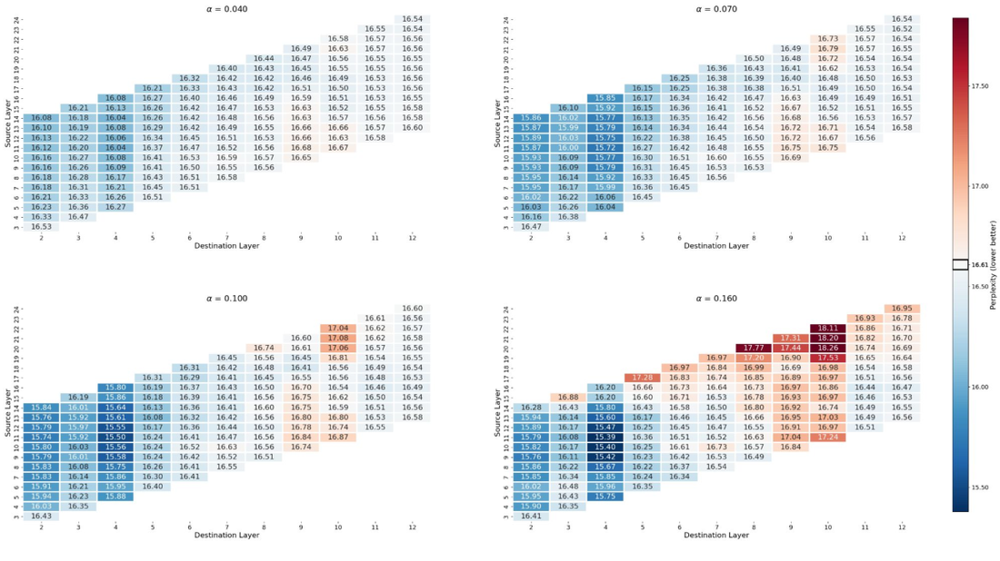
Looped transformer是参数高效变体：不堆叠*独特*块，而是多次应用一组共享块。图3b垂直按深度、水平按输入步展开。Looped transformer的循环只在深度：箭头在栈内。
Recirculation的循环在深度和步两个维度（图3c）：两个输入栈每循环步并行跑（除第一步warm up）。看似小重组，但任意状态跟踪时根本改变计算性质。
实现任意状态更新z(t+1)=f(z(t),x(t))：looped transformer里z(t+1) 必须比z(t) 深一层：它只是带权共享约束的更深前馈transformer。Recirculation里因深度和步都有投影，同一层可同时持z(t) 和z(t+1)。状态跟踪的代价是必须串行经过架构；因顺序更新，即使提供整个输入序列（如prefill）也无法并行化。
图3/4模型展开为每步执行transformer栈两次（比标准多一次迭代）。该迭代数可增。本文所有实验用单额外迭代变体。迭代数无界时recirculation行为如真RNN。
Looped transformer与recirculation另一关键区别：looping循环的是整个residual stream、直接替代前一层来的输入；recirculation把源和目的层激活混合。
形式上单迭代recirculation是混合：z_{t+1,t,d} = α·f(z_{t,t,s}|d,t) + β·z_{t,t,d}，其中t是更新顺序索引、s/d是源/目的层索引、α/β 是混合系数、f是重归一化函数、z_{i,j,l} 是第l层在展开步i输入步j计算后的residual stream输出。重归一化动机是层输出组合时embedding量级增长。总用凸混合 β≡1-α、把源重缩放为与目的相同L2范数：f(z|d,t) = (||z_{t,t,d}||2/||z||2)·z。
Looped transformers多次跑单层或层范围，无自由参数增加得到更深架构。Looping（确定性或自适应）非常流行成功，可增加transformer表达力但不保证无限状态跟踪。一些方法训练允许推理时扩展，其他经预训练或微调引入循环；出人意料几个纯作推理时方法改善推理：与recirculation最相似，但looping（更大深度）概念上区别于recirculation的循环。
训练目标：提出训练损失让给定层embedding更有状态（以状态更新函数可解释）。
状态跟踪：现代大规模并行架构在天然顺序的问题（状态跟踪、多跳推理、规划，组合使并行不现实）上弱。Transformer串行容量受深度限制，且有效利用状态表示随其上移到深层变难。有证明log n层足以识别长度n的regular language和n顶点的图连通问题：但只解决可构造性、非可学习性。实践上研究者对特定有限序列长度问题训练深度限制模型找到巧解。
Recurrent transformers：带顺序循环更新的模型可表达任意状态动态。一些token-by-token循环，大多blockwise。State-space models（SSMs）常被吹捧为状态传播手段，但许多SSM不比普通transformer更可表达、没有像通用循环网那样可表达。
Thinking models：depth dilemma的解法是CoT式「思考」：模型通过从深层到浅层顺序发信号对自己说话、从而前向传播状态。这种循环增强表达力。思考可在自然语言token或潜在空间进行。与其它recurrent transformer一样，训练思考模型贵（限制并行）。
Activation steering：语言模型行为可经干预潜在表示可预测调制。recirculation可视为推理时自我引导机制：不用静态外部推导steering vector，而是利用模型自身上下文化深层激活引导浅层表示轨迹。
超参扫描。扫描recirculation三超参：混合系数 α（β=1-α）、源层s、目的层d。纳入Gemma3 1B PT算arXiv文档困惑度。四热图对应 α∈{0.04,0.07,0.10,0.16}；检查相距不超12层的源-目的对。热图蓝到红编码困惑度低于/高于baseline（此数据集16.6）。
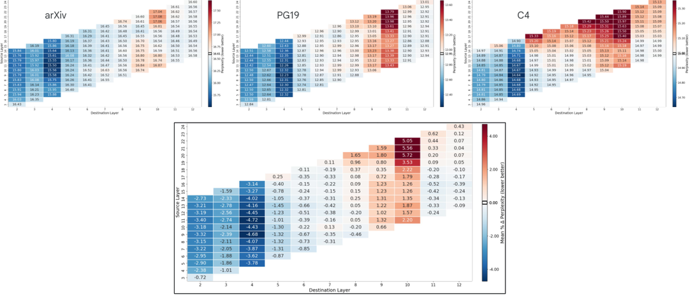
热图相当平滑、揭示系统模式。增大 α 放大recirculation效果但更多源-目的对伤害困惑度。层4配高5-7层的源作目的理想。
三个数据集（arXiv、PG19、C4）固定 α=0.10扫描源/目的层，最优对平均降4.72%。1B/4B/12B调优集最优源/目的对：{11,4}、{18,9}、{35,16}。
困惑度评估。选定源/目的层后用 α=0.15评估十数据集。1B和4B模型降16%、12B降35%。十数据集九种稳健改进。Lambada是异常（非常短序列和tokenization artifacts）。
完整结果表（十数据集 × 三模型规模）：
| Dataset | 1B base | 1B recirc | 1B % | 4B base | 4B recirc | 4B % | 12B base | 12B recirc | 12B % |
|---|---|---|---|---|---|---|---|---|---|
| arxiv | 19.10 | 16.54 | 13.99% | 14.76 | 13.10 | 11.26% | 33.93 | 25.38 | 25.20% |
| big_patent | 10.89 | 9.90 | 9.13% | 8.74 | 8.12 | 7.08% | 17.55 | 13.20 | 24.76% |
| billsum | 4.71 | 4.65 | 1.25% | 3.57 | 3.41 | 4.46% | 4.50 | 4.09 | 10.96% |
| booksum/book | 32.48 | 27.30 | 15.95% | 29.09 | 24.45 | 15.95% | 77.02 | 51.67 | 32.91% |
| c4/webtextlike | 17.10 | 16.43 | 3.93% | 14.26 | 13.64 | 4.37% | 19.21 | 16.71 | 13.01% |
| gov_report | 11.86 | 11.00 | 7.26% | 10.79 | 9.78 | 9.37% | 27.59 | 19.11 | 30.74% |
| lambada | 35.62 | 35.88 | -0.72% | 28.34 | 28.19 | 0.53% | 25.47 | 26.19 | -2.81% |
| newsroom | 14.11 | 13.75 | 2.56% | 11.62 | 11.17 | 3.87% | 13.74 | 12.45 | 9.40% |
| pg19 | 22.27 | 19.06 | 14.41% | 19.49 | 16.43 | 15.72% | 52.86 | 34.15 | 35.40% |
| pubmed | 15.73 | 13.99 | 11.08% | 11.65 | 10.58 | 9.21% | 26.38 | 19.92 | 24.49% |
因为residual-stream embedding量级随层增长，把源embedding喂目的前重归一化（式1、2）更好调节模型、超参扫描得到一致可靠困惑度降模式。附录考虑多种归一化方案。归一化方案对最大困惑度降影响不大，只影响改进在源-目的景观上的鲁棒性：增强我们识别最优对的能力。附录显示多方案扫描，包括identity mapping（无归一化）；也处理4B/12B：它们关键需要非凸混合 β=1而非 β=1-α。
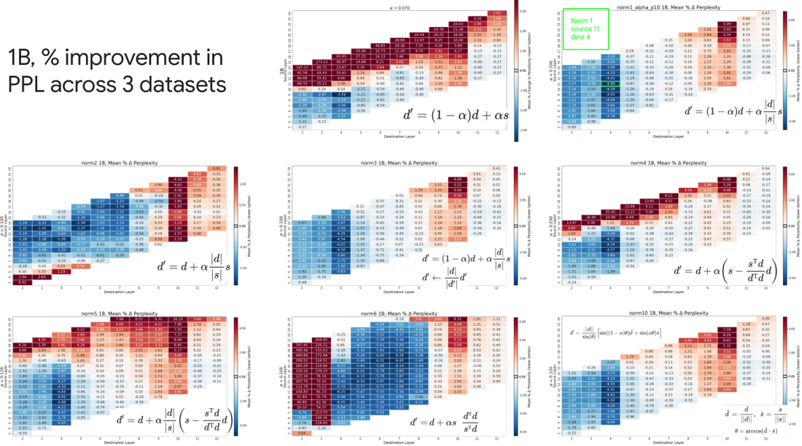
结果指示recirculating Gemma3 1B context窗口开始处的token有害。不惊讶：窗口开始几乎无状态可传播；无recirculation收益时，把内部表示推出分布的成本可能压倒。但4B/12B无早期token recirculation之害。我们在1B引入ramping衰减前几个token的 α，带来小困惑度降。
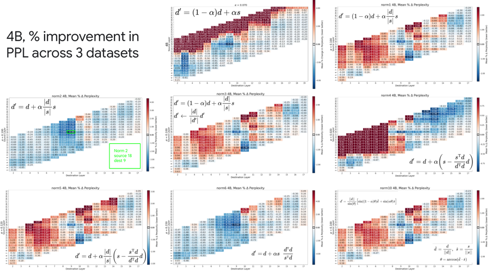
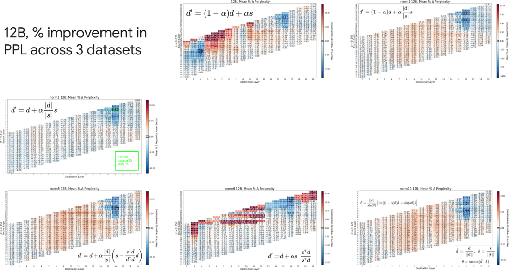
Gemma3对recirculation的接受有什么特殊吗？四个其他模型族：Ministral3、Pythia、Qwen3、Phi2：都在source-destination热图显示稳健困惑度降区域，与Gemma3 1B类似。模型大致同尺寸、都从中部架构区域获益最多。
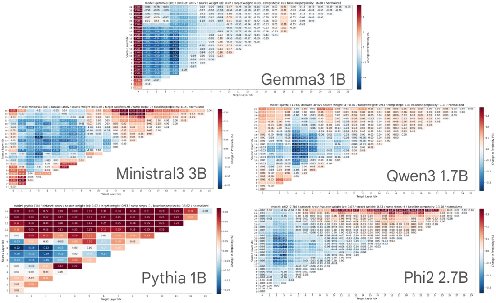
Gemma3 1B的困惑度降百分比显著更大：约5% vs其他族小于0.5%。但没为其他族探索归一化调整或 α 值。所以虽然对recirculation的接受看似普遍，效果量级可能取决于架构或训练流程细节。
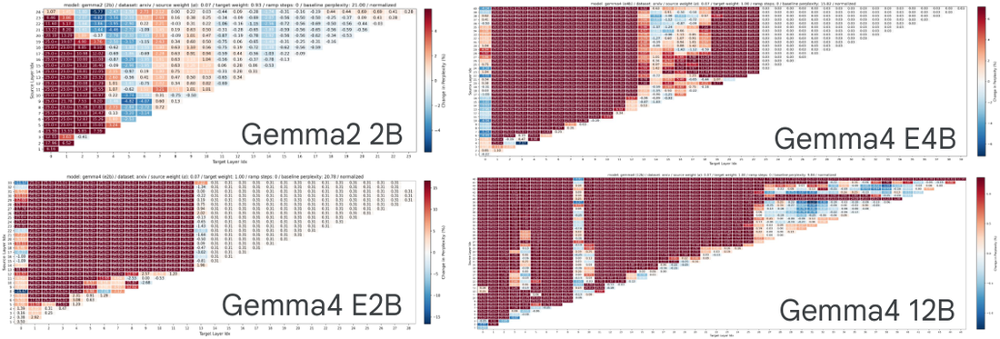
Gemma家族第二和第四代显示与Gemma3同样显著的增益：凸显Gemma模型特别兼容recirculation。
Recirculation vs temperature tuning。困惑度受softmax分布锐度影响，要排除recirculation只是无差别锐化/平滑分布。扫描温度：Gemma3 1B温度1.2（vs默认1.0）困惑度降8.48%。Recirculation单独降14.21%，所以不可归约为温度调整。组合recirculation + 温度调优得19.55%（也温度1.2）。两效应近加性，排除token无关温度调优的伪影解释。
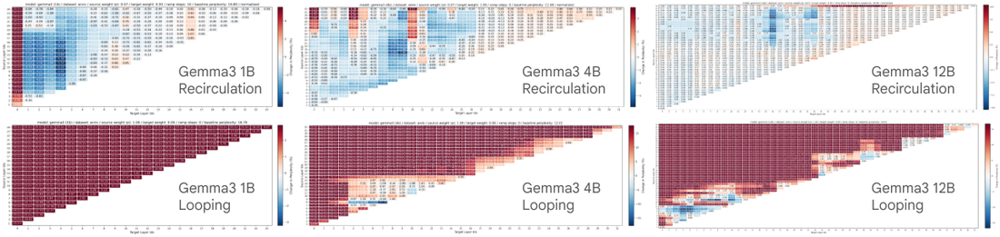
Recirculation vs looping。验证recirculation与looped transformer在结构上不同方式影响模型动态。比较两者：扫描所有 (l1,l2) 层对（l2>l1），looping在栈中l2后插入l1+1到l2的层副本，做训练无关评估。热图显示对Gemma3家族looping至少不产生稳健收益。Recirculation跨模型规模受益，looping预训练模型只在更大规模受益。热图质的差异确认looping和recirculation按不同原则运作。
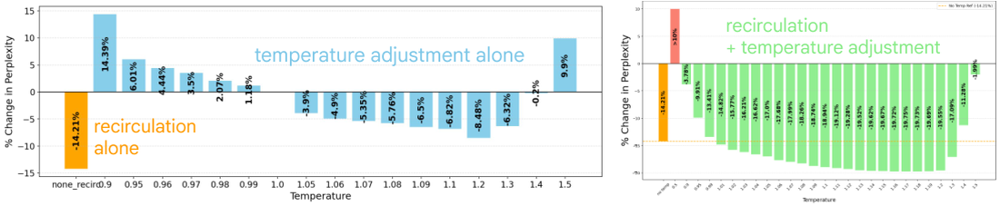
至此所有实验都recirculate窗口每位置token。现在问能否识别哪些token最贡献recirculation改进。1024-token窗口、Gemma3 1B，只recirculate位置t的token、看lag k（位置t+k）的收益。目标log likelihood增加（困惑度降）是k的幂函数：短lag大增、长lag残余尾。
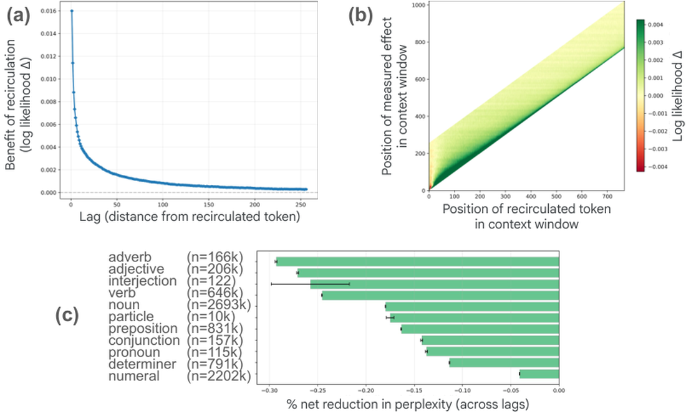
位置效应：最早位置（t<10）recirculation 降 log likelihood，但之后位置都增、尤其短 lag。大致位置 20-200 效果最持久、lag 256 也有可测收益。
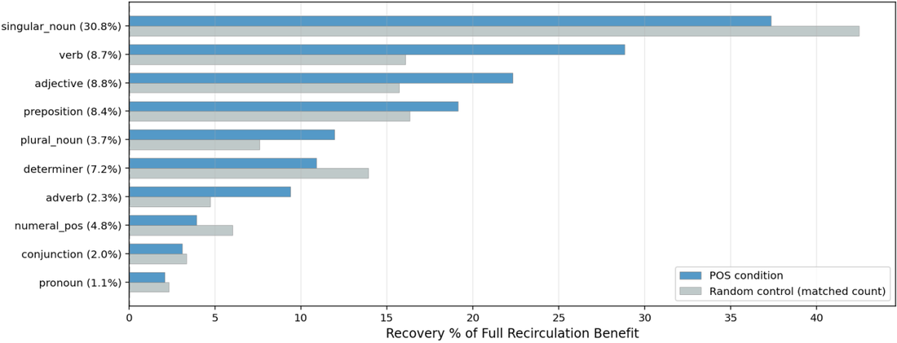
内容效应：给每token标语法词性（PoS），副词、形容词、动词效果最大，数词、限定词、代词最小。有趣的是名词复数形式稳健受益、单数不：模型处理单复数名词的差异也被他人注意到。
也做了recirculate除一外的所有token的实验，结果互补，提示单token recirculation的收益在log likelihood上可加。总之位置和内容效应进一步排除伪影解释、支持recirculation帮助构建持久状态表示的叙事。
评估一系列要求模型生成响应的下游任务（单token选择和thinking响应）。总体上观察模型准确率中等到显著改进。
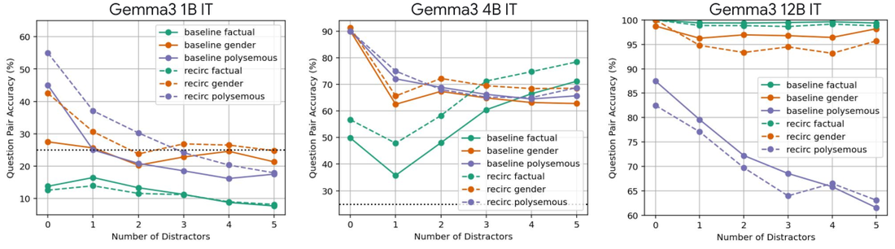
指令跟随。简单指令跟随任务（test of executive function，儿童/神经病人标准测试）。Baseline Gemma3 1B IT表现如随机，所以聚焦4B/12B。用之前选来最小化调优集困惑度的超参，recirculation把4B错误率降约25%、12B降75%。为得上界，专门扫超参最大化该任务准确率（只约束两参数层索引）：recirculation显著改进。
Contextualization。curated数据集探索bank对话那类contextualization失败。每实例含context、cue、question，嵌零或多干扰句，要求yes/no回答。反平衡保证偏差不影响结果；模型须回答问题两变体（Is it a financial institution? 和Is it a geographical feature?）才算对，所以随机准确率25%。还有事实性和性别相关问题。
图7显示Gemma3 1B/4B/12B IT结果。横轴干扰句数；三种问题类型baseline（实线）和recirculation（虚线）。1B三类型中两清晰改进（第三两者都随机）；4B两可靠改进（第三持平）；12B两处于劣势（第三两者天花板）。总体上recirculation是赢，虽然12B失败令人失望。用困惑度评估选的超参（针对*预训练*非*指令调优*模型）；用指令调优模型扫超参得到更大增益。
多选题和单token响应。评估Open LLM Leaderboard标准数据集：ARC easy、ARC challenge、MMLU、Winogrande、BoolQ、PiQA、HellaSwag、Lambada。Lambada是填空单token；其余多选。零样本评估。用MMLU development set扫超参。
八数据集中六改进（正负差都温和）。
GSM8k。与单token数据集相反，这里用chain-of-thought推理解决小学数学。单token响应时recirculation收益须依赖处理问题陈述的推理；CoT时recirculation有额外机会支持扩展推理。
GSM8k也允许大量候选响应。候选多时改进可按能力*锐化*或*扩展*刻画：pass@1（贪婪）改进指示锐化（正确响应胜出候选集）；pass@128（接受128样本中任何正确）改进指示可能集扩展。用pass@1和pass@128评估。
图12对比baseline和recirculated Gemma3 4B（棕/蓝条）pass@1和pass@128。Recirculation同时改进两者：支持锐化和扩展。Recirculation对扩展生成响应比对单token响应更受益，揭示其高级问题解决和复杂推理的潜力。
| Dataset | Baseline % | Recirc % | Adaptive (MMLU test) |
|---|---|---|---|
| MMLU | 57.90 | 58.28 | 59.83 |
| ARC Easy | 81.78 | 82.07 | 82.79 |
| ARC Challenge | 54.44 | 54.86 | 54.95 |
| PiQA | 79.98 | 80.52 | 80.20 |
| BoolQ | 79.08 | 79.11 | 81.04 |
| WinoGrande | 69.46 | 69.38 | 69.61 |
| HellaSwag | 75.89 | 75.86 | 76.01 |
| Lambada | 70.02 | 70.27 | 71.07 |
此前的策略是看纯推理时技术能推多远。Recirculation因开箱即用而惊人。明显下一步经模型适配改善鲁棒性和增益。训练recurrent架构高成本、整模型微调有过拟合风险，所以我们从训练无关设置小步出发，聚焦调节recirculation超参 α 和 β。目标做最小改动、显示优于训练无关recirculation的收益。
训练实验用arXiv、C4、PG19各250文档，Gemma3 1B PT。固定先前产生结果的源/目的层，探索学习表示混合项 α、β 最小化预测损失的方法。
六种适配方法（按困惑度降排序）：Fixed（固定 α=0.15、β=0.85）；Learned constant scalars（标量 α/β 梯度下降）；Learned conditional scalars（MLP映射token特定源/目的embedding到标量）；Learned constant vectors（学习向量值 α、β，Hadamard积）；Learned conditional vectors（MLP映射到向量值 α/β）；Model fine tuning（带recirculation循环连接的微调，固定系数）。
学习系数的方法中，向量值（第四五组）优于标量（第二三组）；token-conditional（第三五组）优于静态（第二四组）。最佳（第五组learned conditional vector α,β）训练MLP生成token特定混合向量。其余方法是消融，证明向量值系数和token条件化都必需。称该优越方法为 *adaptive recirculation*。
Adaptive recirculation平均困惑度降23.0%，对比basic recirculation的8.5%。九数据集每个都胜。性能至少匹敌全Gemma3 1B微调（23.0% vs 21.6%）。优势是Gemma3模型本身未动、微调过拟合风险更低。
下游任务上adaptive recirculation也有前景（caveat：训练MLP的数据集关键）。适应MMLU test split小部分（3600/14000）给跨板改进；适应MMLU aux train split总体改进；直接在其他数据集（ARC）训练大幅降性能。
虽然recirculation/adaptive对单token响应任务无稳健准确率增益，GSM8k增益为扩展生成响应任务提供有希望信号。Adaptive recirculation大幅惠益GSM8k：pass@1错误率 -8.8%、pass@128 -20.9%：考虑模型本身未动是惊人结果。
我们把recirculation视为方法论或哲学贡献，而非「shovel ready」技术。聚焦训练无关架构修改，本质是让模型揭示其根植的改进路径。我们对架构放循环何处、如何混合归一化激活的搜索由模型自身告知。
替代：ML研究的典型路径：是提出任意架构修改、经昂贵训练评估。我们的关键假设：若在不动权重的情况下识别预训练模型*想要*我们怎么微调它，也识别了促进简化训练的inductive bias：无论从零还是微调。Adaptive recirculation实验支持该假设。
产品设计谈design *affordances*：对象告知如何使用它的属性。门把手afford grasping and pulling。类比地，我们探索 *model-design affordances*：基础模型可开发利用放大的自然属性。通过改进基础substrate，改进构建其上的一切能力。多数在基础模型内层引入循环的方法用adapters或cross attention；我们的观察建议混合激活向量的更简单策略可能就够。
超参确定：最优超参（源/目的层、α/β）看似domain/problem dependent。但基于一数据集或一准则选的超参常泛化到其他。除非能找到task-universal超参或task→超参自动映射，recirculation实用适用性受限。
模型族依赖：Gemma的Peri-LN架构和训练优化流程可能产生比其他族更大收益。泛化到其他架构需进一步调查。
归一化：对源激活向量归一化让recirculation更稳健。Gemma3家族中多候选方案中一个跨模型规模好用。是否必要、如何为其他族归一化仍需实验。
Blockwise recurrence：自回归生成时recirculation计算便宜（现代硬件两栈并行近单栈效率）。但prefill时需token-by-token处理，大上下文可能不可行。缓解：blockwise recirculation：并行处理K个token、首次pass时与下K个同时recirculate。K与性能的权衡未探索。
多次循环迭代：真循环网会在步t循环栈1到t-1的激活。我们探索的变体只循环栈t-1，每栈恰好循环一次。每栈循环r次的中间方法未研究。
多循环路径：选了单 {source, destination} 对，但可沿多路径同时recirculate。一些架构超参扫描出现不同、不连通的区域都有效：可能这些不同区域互补，如在不同抽象层级传达状态信息。
适配：只是刮了表面。Adaptive recirculation结果极有前景：调优集很小、无需调模型权重就得稳健改进。转向模型权重微调前还有很多改进途径（token-conditioned recirculation pathways、归一化方法）。
通过倾听模型自身内部动态而非强迫昂贵架构大修，recirculation提供强大、计算便宜的前进路径。解锁这些内在affordances可能巩固模型的基本上下文理解，为扩展、多轮推理提供关键scaffolding。
参考：https://arxiv.org/html/2608.17981v1